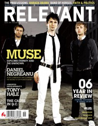

CMnexus
: Contemporary Christian culture, music, and media.
|
RelevantNov / Dec 2006, #23
| Cover |
|---|
|  | | Writers in this Issue |
|---|
Brandon, John
Carey, Jesse
Caruth, Aaron
Clevinger, Joseph
Edwards, Tim
Howard, Brandon
Miller, Danny
Orendorf, Josh
Owens, Greg
Pappas, Angela
Phillips, Lisa
Pilgrim, William
Reeves, Patrick
Stephens, Alecia
Weiss, Johnny
|
Cover Feature:
- "Eternal Musings: Probing the Unknown with Muse" by Joseph Clevinger
Article:
- "All Grown Up" by William Pilgrim
- "A Dark Place: Keane Faces Their Demons" by Jesse Carey
- "Staying Positive Even When It Doesn't Pay" by Aaron Caruth
Slices Spotlight:What the Heck Happened to...:Album Review: |
|